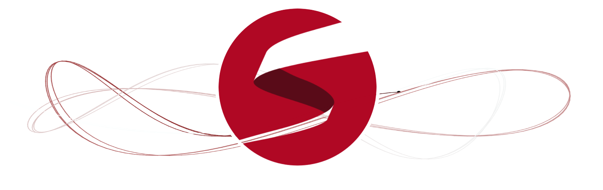
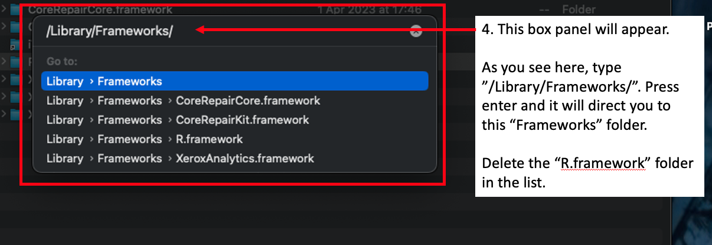
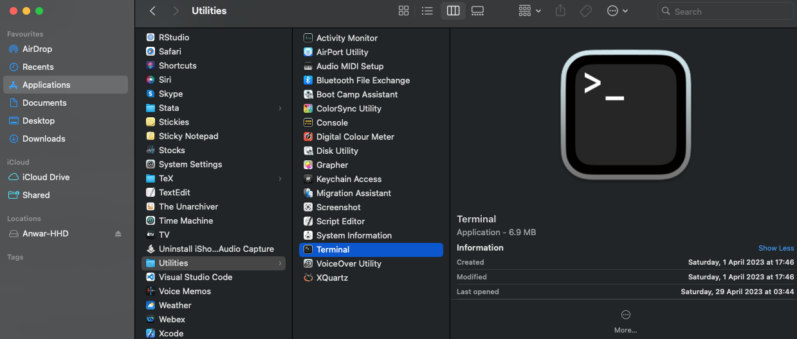
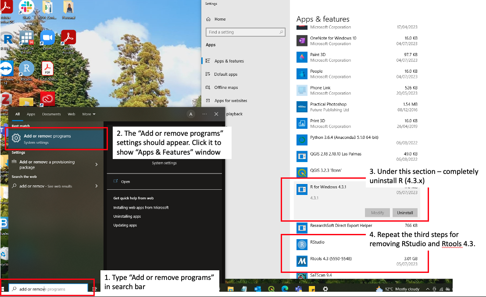
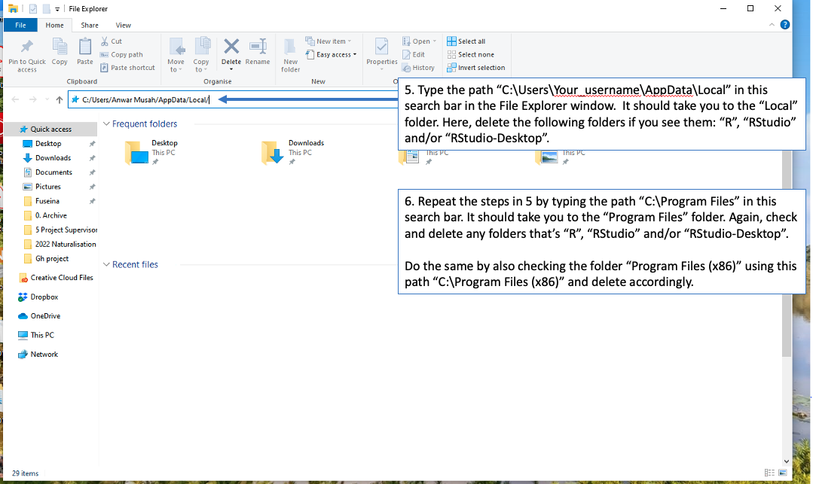

1 Getting started
1.1 What is Stan?

Stan is an interface for several statistical software packages (e.g., RStudio, Python, Julia, Stata, and MATLAB) which allows the user to perform state-of-the-art statistical modelling within a Bayesian framework. For R users, the package is called rstan which interfaces Stan and RStudio.
The focus of this workshop will be solely on Stan and RStudio. We will show you how one can develop and compile Stan scripts for Bayesian inference through RStudio to perform basic parameter estimation, as well as a wide range of regression-based techniques starting with the simplest univariable linear models and its different families to the more advanced multivariable spatial risk models.
Before all that, let us install the appropriate software. The next section will guide you through the installation process.
Important note: The installation process is a bit involved for all the wrong reasons. For some strange reason, Stan (i.e., rstan package) works perfectly with any previous release of R that’s version 4.2.x. However, rstan don’t seem to work properly with the latest builds for R that’s version 4.3.x. So to avoid grief, do not install any version of R that’s version 4.3.x.
If you have R 4.3.x installed. Please remove it, as well as we recommend the removal of any historical folders that are R-program-based hidden in your machine as safety measure to avoid any conflicts with the things we are about to install.
1.2 Installation of R & RStudio

This section takes you through the installation process for R (Base) and RStudio on MAC and Windows.
1.2.1 Installation process for MAC users
You will need to have the following software installed for the rstan package to work on MAC.
- R (version 4.2.3)
- RStudio (version 2023.06.0-421)
- XQuartz (version 2.8.5)
- XCode (version 14.3.1 (14E300c))
If you already have R and RStudio installed, then the first thing to do is to remove them entirely from our MAC machine. Please follow the guidance outlined here.
Removal steps:
Before deleting R and RStudio. We need to find this folder called “R.framework” on our MAC PC and delete it from our machine entirely, so that when we install R (version 4.2.3) and rstan there would not be any crashes or conflicts between the versions, packages etc.,
To find the “R.framework” folder on a MAC PC:
- Go your “Finder” application and click it.
- Click “Go” in the menu bar.
- Click “Go to Folder” on the pull down menu and a panel will appear.
- Type
/Library/Frameworks/in the panel and press the return (or enter) button in the search panel to go the “Frameworks” folder.

- From the list of folders under “Frameworks”. Highlight “R.framework” folder and right-click then delete it.
- Go back to your Applications folder and delete R and RStudio apps and empty out your Bin
Installation of R (4.2.3) and RStudio (2023.06.0-421) on MAC:
| OS User type | R (Base) | RStudio Desktop |
|---|---|---|
| MAC | R-4.2.3.pkg | RStudio-2023.06.0-421.dmg |
- Download the file for R-4.2.3.pkg attached in the table above.
- Double-click the downloaded file (i.e., R-4.2.3.pkg) and follow the steps to complete the installation.
- Now, we can download the file (i.e.,
.dmg) for RStudio from the link provided in the above table. - Double-click the downloaded file (i.e., RStudio-2023.06.0-421.dmg) and then drag and drop the RStudio icon into the Applications folder to complete the installation.
Installation of XQuartz (2.8.5):
Some functions in R and Stan require some of the libraries from XQuartz to function properly on your MAC.
- Download the latest version of XQuartz (XQuartz-2.8.5.pkg) by clicking on this LINK and simply complete the installation process by following the steps.
Installation of XCode (14.3.1 [14E300c]):
Some functions in R and Stan require some of the external developer tools from XCode application to function properly on your MAC.
- Go to the App Store application and get the XCode app downloaded by clicking on this LINK.
- Once it is downloaded, you can click on the “OPEN” button to verify it’s been downloaded. A window will prompt you to complete installation.
- Lastly, and for safe measures - we going to run this through our Terminal. You can open the Terminal program by going to the Applications > Utilities folder and select the Terminal application

- In the terminal, type the following code
xcode-select --install. If you get the following error message shown in the code chunk below, then it means that the XCode program has been installed properly - no need to do anything at this point. Otherwise, the terminal will proceed to install the XCode tool remotely.
xcode-select: error: command line tools are already installed, use "Software Update" in System Settings to install updatesThis completes the installation process for R and RStudio on MAC.
1.2.2 Installation process for Windows users
You will need to have the following software installed for the rstan package to work on Windows.
- R (version 4.2.3)
- Rtools42 (version 4.2)
- RStudio (version 2023.06.0-421)
If you already have R and RStudio installed, then the first thing to do is to remove them entirely from our Windows machine. Please follow the guidance outlined here:
Removal steps
- Type “Add or remove programs” in the bottom search bar.
- The “Add or remove programs” settings should appear. Click it to show the “Apps & Features” window.
- Under this section – completely uninstall R (4.3.x).
- Repeat the third steps for removing RStudio and Rtools 4.3.

Now, we going to delete any folders with R-related programs which are hidden in our computer. We will check three locations in our PC (i.e., Local, Program Files or Programs Files (x86) folder).
- Type the path
C:\Users\Your_username\AppData\Localin the search bar on the File Explorer window and press “Enter”. It should take you to the “Local” folder. Here, delete the following folders if you see them: “R”, “RStudio” and/or “RStudio-Desktop”.

Repeat the steps in 5 by typing the path
C:\Program Filesin this search bar on the File Explorer window. Pressing “Enter” will direct you to the “Program Files” folder. Again, check and delete any folders that’s “R”, “RStudio” and/or “RStudio-Desktop”.Lastly, repeat the steps in 5 or 6 by checking the folder “Program Files (x86)” using this path
C:\Program Files (x86)and delete accordingly.
Installation of R (4.3.2) and RStudio (2023.06.0-421) on Windows:
| OS User type | R (Base) | RStudio Desktop |
|---|---|---|
| Windows | R-4.2.3-win.exe | RStudio-2023.06.0-421.exe |
- Download the file for R-4.2.3-win.exe attached in the table above.
- Double-click the downloaded file (i.e., R-4.2.3-win.exe) and follow the steps to complete the installation.
- Now, we can download the file (i.e.,
.exe) for RStudio from the link provided in the above table. - Double-click the downloaded file (i.e., RStudio-2023.06.0-421.exe) and follow the steps from the installer to complete the installation.
Installation of Rtools 4.2
For Windows users, after you have completed the installation for R and RStudio, you are required to install the Rtools42 package as it contains some libraries and developer tools for the smooth functioning of Stan.
- Download the latest version of Rtools42 by clicking on this LINK to initiate the download of the Rtools42 installer.
- Double-click the downloaded rtools42-5355-5357.exe file and follow the steps to complete the installation.
This completes the installation process for R and RStudio on Windows.
1.3 Installation of rstan (or Stan)
When opening the RStudio application on your Windows or MAC PC. You will be greeted with its interface. The window is usual split into three panels: 1.) R Console, 2.) Environments and 3.) Files, Help, Outputs etc.,

The above section is the Menu Bar. You can access other functions for saving, editing, and opening a new R and Stan script files for writing and compiling codes. Let us opening a new R script by clicking on the File > New File > R Script. This should open a new script file titled “Untitled 1”.
Now we are going to latest development version of rstan 2.26.22. Using the install.packages() function, we can finally install this package. You can use the code chunk below:
After installation, use the following to code chunk to test if its work:
You will first see some gibberish running through your console - don’t be alarmed - it means that its working. You will know rstan has been successfully installed and it works when you see some iterations for four chains displayed in console. You will also see the objects fit, fit2, mod and stancode stored in the Environments panel when its done.
This completes the installation process for rstan.
1.4 Installation of other relevant R-packages
You will need to install the following packages ahead of next week’s sessions:
sf: “Simply Features” package that allows the user to load shapefiles into RStudio’s memory.tmap: this package gives access to various functions for users to generate maps.devtools: Needed to select a particular version of thestarspackage.stars: Needed as support forsfandtmappackages to work.SpatialEpi: grants access to functionexpected()to calculated expected numbers.geostan: grants access to further functions that we need to compute the adjacency matrix that can be handled in Stan. We will use the two functionsshape2mat()andprep_icar_data()to create the adjacency matrix as nodes and edges.tidybayes: grants access to further functions for managing posterior estimates. We will need it calculating the exceedance probabilities. Load this alongsidetidyversepackage.
install.packages("devtools")
devtools::install_version("stars", version = "0.5.3", repos = "http://cran.us.r-project.org")
install.packages("sf")
install.packages("tmap")
install.packages("SpatialEpi")
install.packages("geostan")
install.packages("tidybayes")
install.packages("tidyverse")This concludes the installation section and sets you computer up for the course. If you encounter any problems please contact me ahead of next week.